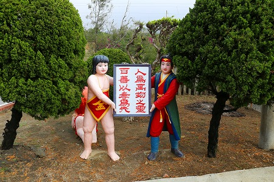

台湾修行の旅、次に向かったのは
秋茂園。
奇妙なコンクリオブジェが立ち並ぶ個人が作った庭園だ。
ここは前回、2013年にも寄ったのだが、その際は修復工事をしており、充分に見られなかったので再訪してみた。
(その時の様子)
庭園外にあるこの庭園の創設者である
黄秋茂氏の像。
手前のキューピーちゃん含め綺麗に塗りなおされているようだ。

これまた入り口付近にある桃太郎と金太郎像。
黄秋茂氏は日本に滞在した時期も永いのでこのように日本のキャラもちょくちょく登場するのだ。
桃太郎金太郎コンビの後ろに寝そべるギャルも含めて綺麗にペイントされている。
庭園内に入ると、看板も新しく作られている。
孫悟空御一行も色鮮やかに！
園内は通路も含めかなり綺麗に整備されていた。
そして前回一番衝撃的だった
仏像3段飾りの雛壇も綺麗になっていた。
各コンクリ像も全部塗りなおされている。
ただし、以前の怪しさはそのままなところが素晴らしい。
隅々まで綺麗になっているなあ。
ここまでは前回入れたトコロなので詳しくは触れない。
で、ココからが本番。
入り口入って正面にある半球儀の左側一帯が工事中で入れなかったエリアだ。
今回、修復工事はすっかり終わっており、より良い状態で見ることが出来た。
前回、入れなかった通路を歩く。
最初に現れるのが八仙過海。日本でいうと七福神のようなもの。
等身大よりやや大きめのコンクリ像が林立する様は日本の五色園っぽいぞ。
修復して綺麗になっている辺りも五色園に似ているではないか。
詩の書かれた大きな碑があった。
中国語と日本語で書かれている。
「男なら」というタイトルにピッタリな全裸小僧が立ちはだかっている。
しかもこの全裸小僧、以前トイレの前にあった小便小僧じゃん！
やけに尿道が太くて凄い勢いの水を出していたが珍子自体がどっかにいっちゃったぞ？
後から見ると「女なら」という詩が。
内容はまあ、男らしく女らしく的な内容です。
この秋茂園、キテレツな神仏にばかり目が行きがちだが、もうひとつの主役が動物たち。
たくさんのコンクリ動物が点在しているのだ。
その何とも言えない
絶妙な表情が魅力なのだ。
かなり深刻に悩んでます…。
意味不明なポーズのラクダ。
意味不明なポーズのキリン。
カウボーイも健在だった。
超カッコイイ滑り台。
もう一つの滑り台の傍らに佇むライオン（？）もかなりヘタっていた。
滑り台に登ってみた。
動物が結構な密度で設置されている。
動物が密集するエリアの逆サイドにはずーっとお堂が並んでいる
こちらは友愛堂
私の心という所信表明的なモノ。
もちろんこれもコンクリですよ。
中正堂の前には孫文。
孔子堂の前には孔子。
そして天主堂の前にはマリア様が。
さらに基督堂の前にはキリストさんのコンクリ像が立っている。
いずれもビミョ〜〜〜な表情をしている。
ちなみに各堂はかなりシンプル、というかガラ〜ンとしている。

で、通路の突き当りには半球儀がそのまま丸屋根になっている涼亭が。
入り口の左右には貝に入った人たちがお出迎え。
この辺の造型センスも堪らない。
中には何もないが、柱に色々な人生訓のようなものが書かれていた。
「ホットレモンの様な味」というのが謎で面白かった。
前回訪問時には地球のてっぺんに銃を持った男女の像があったのだが、きれいさっぱりなくなっていた。
何らかの理由があったのだろうか。
屋根にはこれまた正体不明な天使のような方が並んでました。
再び公園中央部に戻る。
これまた以前近寄れなかった
巨大な牛の像。
かなり傷んでいたが、これまた修復されて綺麗に塗りなおされていた。
牛の傍らにいる牧童。
そしてこの公園のシンボルともいえる地球儀の上に立つ母子像。
脇には兵隊さんが旗を掲げている。

旗手はピシッとしている。
さっきの動物と緊張感がまるで違う。
お母さんを背負う像。親孝行を啓蒙しているのだろう。
園内にはこんな看板まで作られていた。
作品のオリジナリティを尊重した修復で、好感が持てた。
良かったヘンな動物とか撤去されてなくて。
何度来ても面白い公園だ。
あの伝説の珍寺へGO！